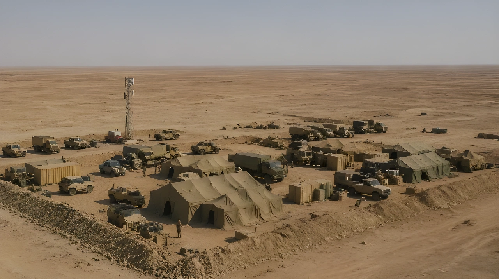

Le 9 mai 2026, le Wall Street Journal révèle qu'Israël a installé au moins une — et possiblement deux — base militaire clandestine dans le désert irakien, construites peu avant le déclenchement de la guerre contre l'Iran le 28 février. Découvertes par un berger, défendues par des frappes israéliennes qui ont tué un soldat irakien, ces installations posent une question aussi ancienne que brutale : l'Irak est-il maître de son propre territoire ?
Dans le cadre de la guerre contre l'Iran déclenchée le 28 février 2026, Israël ne s'est pas contenté de frapper depuis son propre territoire. Selon le Wall Street Journal, qui cite plusieurs sources dont des responsables américains, l'armée israélienne a construit, avec l'aval de Washington, un poste militaire clandestin dans le désert irakien occidental — probablement dans la région de Nadjaf — peu avant le début des hostilités. L'emplacement a été choisi avec soin : la zone désertique, vaste, quasi-inhabée, proche des frontières jordanienne et syrienne, était idéale pour dissimuler une infrastructure militaire. Des analystes OSINT ont par ailleurs identifié que le site correspondrait à un ancien aérodrome militaire remontant à l'époque britannique, réactivé et adapté discrètement.
La base remplissait plusieurs fonctions logistiques critiques. Elle servait de point d'appui aux forces spéciales israéliennes déployées en territoire irakien et d'infrastructure de soutien à l'aviation militaire israélienne opérant contre des cibles iraniennes. Elle abritait également des équipes de recherche et de sauvetage (CSAR), chargées de récupérer d'éventuels pilotes abattus au-dessus de l'espace aérien iranien ou irakien.
La découverte de la base ne résulte d'aucune opération de renseignement irakienne. C'est un berger local qui, alerté par les allées et venues inhabituelles d'hélicoptères au-dessus du désert au début du mois de mars 2026, en avertit les autorités. L'armée irakienne envoie alors des soldats en reconnaissance le 4 mars. Ce qu'il se passe ensuite constitue l'un des épisodes les plus révélateurs de la crise : les forces israéliennes présentes sur le site ouvrent le feu sur les militaires irakiens pour préserver le secret de l'installation. Un soldat irakien est tué, deux autres blessés.
Dans un premier temps, Bagdad attribue les frappes aux États-Unis — aucun responsable irakien ne soupçonnant alors qu'Israël disposait d'une présence armée directe sur son sol. L'armée irakienne se contente de dénoncer publiquement une opération « menée sans coordination ni autorisation », sans pouvoir nommer l'auteur des tirs. C'est la révélation du Wall Street Journal, deux mois plus tard, qui permet de reconstituer la vérité.
Israël construit, avec l'aval américain, une base clandestine dans le désert irakien occidental. Le site, bâti sur un ancien aérodrome britannique, est opérationnel avant le début de la guerre contre l'Iran.
Début de la guerre américano-israélienne contre l'Iran. La base irakienne entre en activité comme point logistique de l'aviation israélienne et comme dispositif CSAR.
Un berger signale aux autorités irakiennes une activité militaire anormale : rotations d'hélicoptères dans une zone désertique normalement inhabitée.
Des soldats irakiens envoyés en reconnaissance sont pris pour cible par des frappes israéliennes. Un mort, deux blessés. Bagdad attribue les frappes aux Américains et dénonce une opération « sans coordination ni autorisation ».
Le Wall Street Journal publie l'enquête révélant l'existence de la base israélienne. Bagdad est submergée par la polémique. Le gouvernement irakien saisit le Conseil de sécurité de l'ONU.
Confirmation de l'existence d'une seconde base possible par France Info. L'image satellite Airbus du 8 mars est diffusée. Les traces au sol ont déjà disparu sous l'effet des intempéries.
La révélation provoque une onde de choc en Irak. Le gouvernement de Mohammed Shia' al-Soudani, déjà fragilisé par sa double allégeance à Washington et à Téhéran, se retrouve dans une position intenable. Les autorités irakiennes tentent d'abord d'atténuer la polémique en rappelant que leurs forces armées avaient réagi dès les premiers signes d'une présence étrangère — sans savoir qu'il s'agissait d'Israéliens. Cette précision n'est guère convaincante : un soldat irakien a été tué sur le sol irakien par des forces israéliennes, et Bagdad ne l'a su que deux mois après les faits.
Bagdad saisit formellement le Conseil de sécurité de l'ONU pour dénoncer une violation flagrante de la souveraineté irakienne. Cette démarche diplomatique reste cependant largement symbolique : ni Israël ni les États-Unis ne reconnaissent officiellement les faits rapportés par le Wall Street Journal, et aucune résolution contraignante ne peut être adoptée face aux vetos occidentaux potentiels.
« Cette opération inconsidérée a été menée sans coordination ni autorisation. »
— Armée irakienne, communiqué officiel, 4 mars 2026Au-delà du scandale diplomatique immédiat, la révélation met en lumière plusieurs réalités structurelles. En premier lieu, la coopération militaire américano-israélienne dans le cadre de la guerre contre l'Iran s'étend bien au-delà de ce qui avait été officiellement reconnu : Washington a non seulement toléré mais facilité l'implantation d'Israël sur un sol souverain tiers, sans en avertir le gouvernement local. En second lieu, les capacités de renseignement et de surveillance de l'Irak sur son propre territoire se révèlent insuffisantes pour détecter une opération d'une telle ampleur.
La présence de forces spéciales et d'équipes CSAR en Irak illustre enfin les exigences opérationnelles d'une campagne aérienne sur une aussi longue distance. L'Iran est à environ 1 000 kilomètres d'Israël ; toute mission nécessite des points d'appui intermédiaires pour la gestion des urgences. L'Irak — pays avec lequel Israël n'entretient aucune relation diplomatique — devient ainsi, à son insu, un maillon de la chaîne logistique israélienne.
| Acteur | Position officielle | Intérêt réel |
|---|---|---|
| Israël | Silence officiel | Maintien de la profondeur stratégique dans le conflit iranien |
| États-Unis | Silence officiel | Soutien à Israël sans exposition diplomatique directe |
| Irak | Saisine de l'ONU, indignation | Reconquête symbolique de souveraineté, fragile |
| Iran | Instrumentalisation de la révélation | Délégitimer le gouvernement irakien pro-occidental |
| Milices pro-iraniennes (Hachd) | Exigence de représailles | Pression sur Bagdad, renforcement de leur légitimité interne |
L'affaire des bases secrètes s'inscrit dans un continuum historique. Depuis 2003 et l'invasion américaine, l'Irak n'a jamais pleinement recouvré le contrôle de son territoire. Les milices du Hachd al-Chaabi — forces paramilitaires pro-iraniennes intégrées formellement à l'État irakien — contrôlent des portions entières du pays en dehors de toute autorité gouvernementale réelle. Les États-Unis maintiennent plusieurs milliers de soldats dans des bases irakiennes au nom de la lutte contre Daech. Et désormais, Israël — pays avec lequel l'Irak est officiellement en état de guerre depuis 1948 — a pu installer discrètement des troupes sans que Bagdad en soit informé.
Les milices du Hachd, qui avaient déjà mené des attaques contre des bases américaines en Irak en représailles aux frappes sur l'Iran, exigent désormais des mesures concrètes. Pour elles, l'affaire confirme que le gouvernement irakien n'est qu'un État fantoche incapable de défendre son territoire face aux ingérences américano-israéliennes. Cette narrative risque de renforcer leur poids politique dans les mois à venir.
« Le désert occidental de l'Irak est l'endroit idéal pour un avant-poste militaire clandestin, compte tenu de sa faible densité de population et de son immensité. »
— Expert militaire cité par le Wall Street Journal, mai 2026L'affaire des bases israéliennes en Irak n'est pas seulement un épisode de la guerre contre l'Iran : c'est un révélateur de la condition géopolitique irakienne vingt ans après l'invasion de 2003. Entre les États-Unis qui maintiennent des troupes dans le pays, l'Iran qui y finance et arme des milices, et désormais Israël qui y opère en secret, l'Irak incarne la figure de l'État pris en étau entre grandes puissances rivales. La saisine de l'ONU par Bagdad est un geste de dignité souveraine ; elle n'en masque pas moins l'incapacité structurelle d'un État à faire respecter son territoire par les acteurs qui l'ont, chacun à leur manière, façonné ou fracturé.